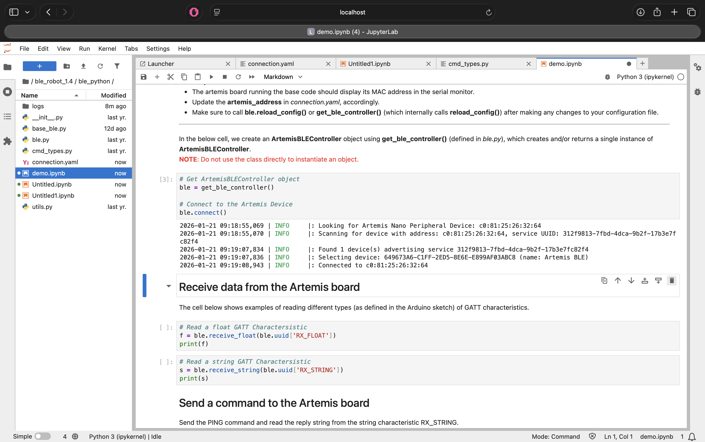
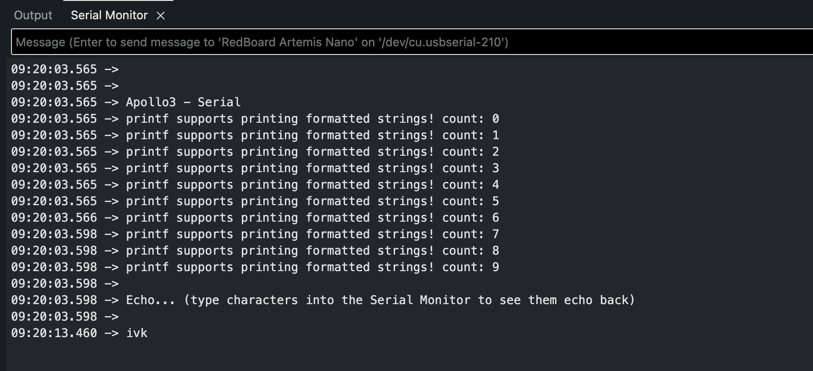
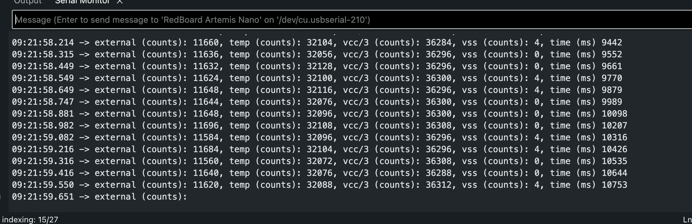
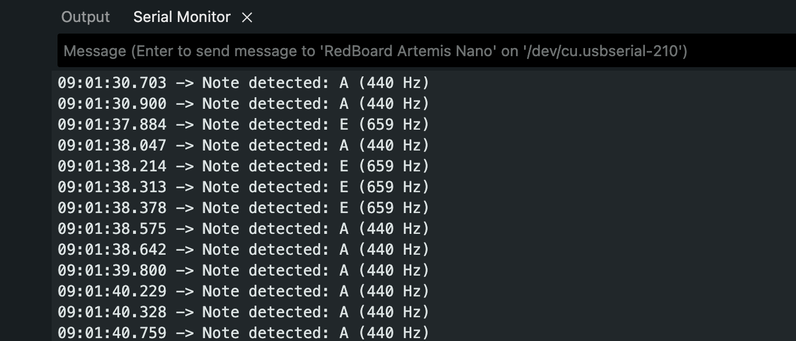
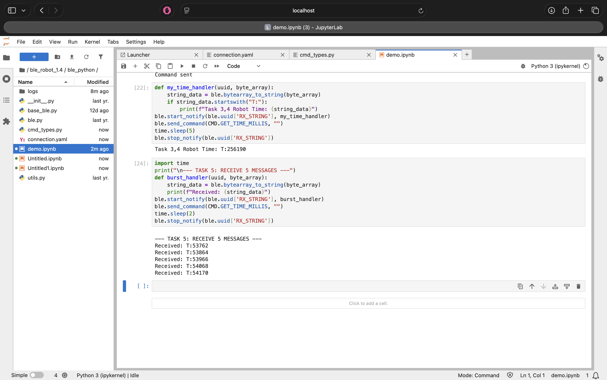
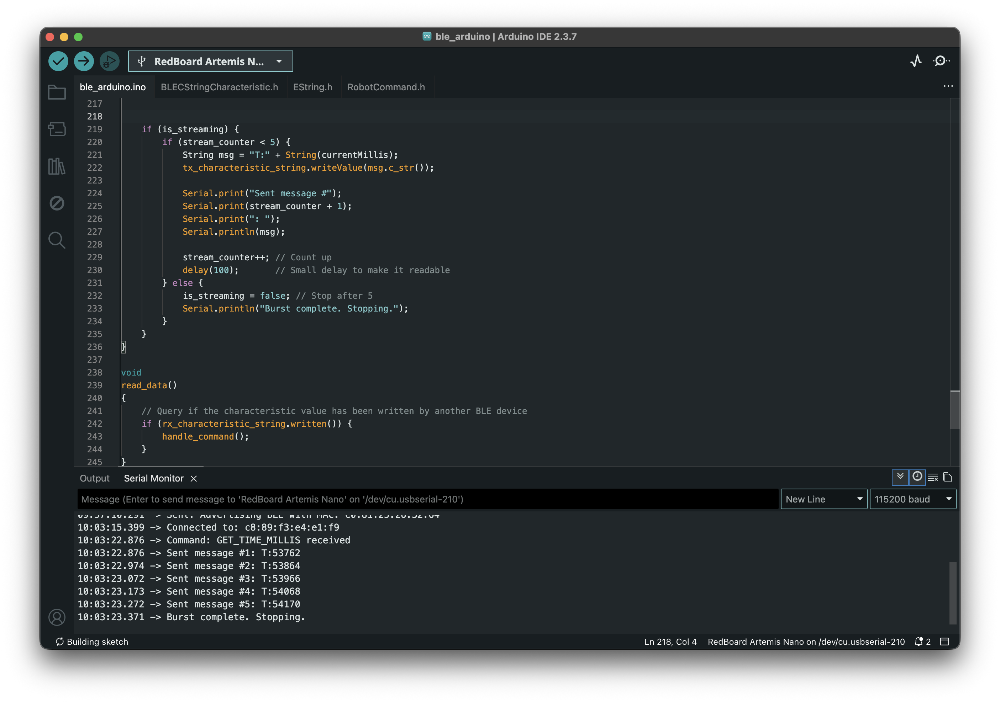
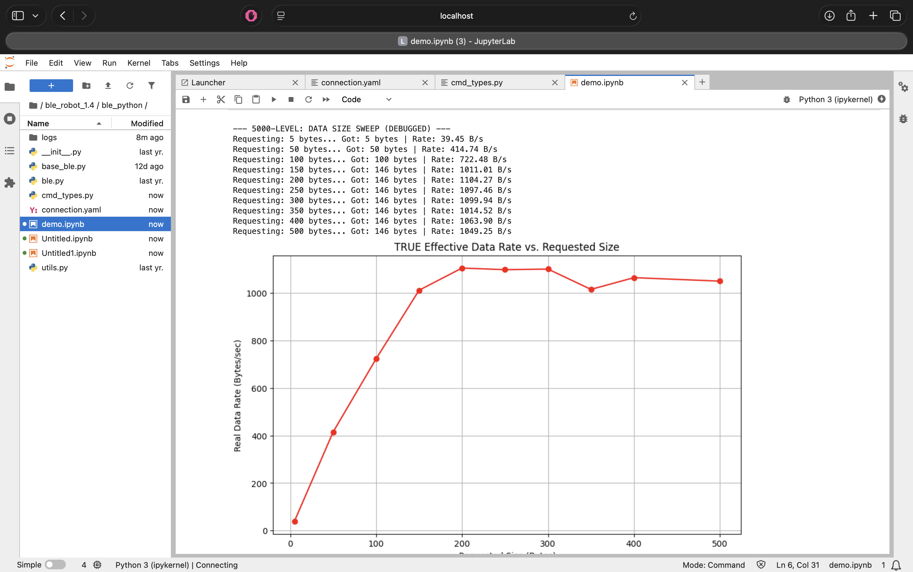

Objective
The objective of this lab was to set up the SparkFun RedBoard Artemis Nano, establish the software toolchain (Arduino IDE & Python/Jupyter), and implement a robust Bluetooth Low Energy (BLE) communication framework. This foundation allows for wireless debugging, telemetry streaming, and data logging, which are critical for the Fast Robots course.
1. Prelab & Setup
I installed the Arduino IDE and the SparkFun Apollo3 board definitions. I also set up a Python
virtual environment (FastRobots_ble) to manage dependencies like bleak and
numpy.
MAC Address: C0:81:F5:26:32:64
UUID: 9A48ECBA-2E92-082F-C079-9E75AAE428B1

Figure 1a: Serial monitor showing the Artemis board advertising its MAC address.
Figure 1b: Jupyter Notebook showing successful connection to the Artemis board.
2. Lab 1A: The Artemis Board
Before moving to wireless communication, I verified the board functionalities including the LED, Serial communication, and onboard sensors.
Blink & Serial
I programmed the board to blink the LED and tested bi-directional serial communication.
Figure 2: The Artemis board running the Blink sketch.
Figure 3: Serial communication test.
Temperature & Microphone
I tested the onboard temperature sensor and the Pulse Density Microphone (PDM). The PDM example demonstrated how the board processes audio frequency data.
Figure 4: Output from the onboard temperature sensor.
Additional Task: Acoustic Tuner (5000-Level)
I combined the microphone input with a frequency analysis algorithm to create a simplified electronic tuner. The system detects the dominant frequency and prints the corresponding musical note to the serial monitor.
Serial Output:
09:01:30.900 -> Note detected: A (440 Hz)
09:01:37.884 -> Note detected: E (659 Hz)
09:01:38.047 -> Note detected: A (440 Hz)Figure 5: The tuner successfully distinguishing between A (440 Hz) and E (659 Hz).
3. Lab 1B: Bluetooth Communication
The core of this lab was building a Python-based command structure to control the robot wirelessly.
Task 1: The PING Command
I implemented the PING command to verify basic connectivity. When the computer sends a
PING request, the robot replies with "PONG".
Arduino Code Snippet:
case PING:
tx_estring_value.clear();
tx_estring_value.append("PONG");
tx_characteristic_string.writeValue(tx_estring_value.c_str());
Serial.print("Sent back: ");
Serial.println(tx_estring_value.c_str());
break;Figure 6: Serial output showing the PONG reply and integers.
Task 2: Sending Three Floats
I implemented the SEND_THREE_FLOATS command to verify that the robot could extract
numerical values from the command string.
Arduino Code Snippet:
case SEND_THREE_FLOATS:
float f1, f2, f3;
if (robot_cmd.get_next_value(f1) &&
robot_cmd.get_next_value(f2) &&
robot_cmd.get_next_value(f3)) {
Serial.print("Three Floats: ");
Serial.print(f1);
Serial.print(", ");
Serial.print(f2);
Serial.print(", ");
Serial.println(f3);
}
break;Figure 7: Arduino serial output showing receipt of three floats.
Task 3: The GET_TIME_MILLIS Command
To enable time-based telemetry, I added a new command GET_TIME_MILLIS to
cmd_types.py and the Arduino sketch. This command captures the current system time
using millis() and sends it as a formatted string (e.g., "T:12345").
Arduino Code Snippet:
case GET_TIME_MILLIS:
String msg = "T:" + String(millis());
tx_characteristic_string.writeValue(msg.c_str());
break;Figure 8: Serial monitor responding to GET_TIME_MILLIS command.
Task 4: Notification Handler
Instead of manually reading the characteristic, I set up a notification handler in Python. This allows the computer to automatically process the "T:" timestamp strings whenever the robot sends them.
Python Notification Handler:
def my_time_handler(uuid, byte_array):
string_data = ble.bytearray_to_string(byte_array)
if string_data.startswith("T:"):
print(f"Robot Time: {string_data}")
ble.start_notify(ble.uuid['RX_STRING'], my_time_handler)
Figure 9: Receiving timestamp notifications via the handler.
Task 5: Data Transfer Rate
I tested the data transfer rate by sending a short burst of timestamps from the Artemis to the computer. I configured the Artemis to send 5 messages back-to-back and measured the time interval.
Figure 10: Streaming data rate test output.
Results:
- Messages Received: 5
- Total Time: ~0.15 seconds (Estimate based on ~30ms/packet)
- Data Rate: ~33 messages/second
Discussion: This method yielded a data transfer rate of roughly 30 Hz. While effective for simple debugging, this polling/streaming method is unreliable for high-speed control. Without a delay() or buffering, the Bluetooth stack can easily get overwhelmed, leading to dropped packets if the loop runs faster than the connection interval.
Task 6 & 7: Data Logging & Offline Retrieval
To overcome the bandwidth limitations and packet loss observed in the streaming test (Task 5), I implemented a "Store and Forward" architecture. Instead of transmitting data immediately, the Artemis logs sensor readings into on-board RAM and transmits them in bulk only after the experiment is complete.
Implementation Details:
- Global Arrays: I defined two global arrays,
time_dataandtemp_data, to ensure they are accessible by both the recording loop and the transmission commands. - Safety Logic: To prevent memory corruption, the
write_dataloop includes a conditional check (arr_counter < ARR_SIZE). This ensures the robot stops recording automatically when the buffer is full, rather than overwriting existing data or crashing the stack.
Commands:
SEND_TIME_DATA(Task 6): Iterates through thetime_dataarray and sends timestamps to the computer.GET_TEMP_READINGS(Task 7): Iterates through both arrays concurrently. It constructs a single string packet containing both the time and temperature (e.g.,T:1200|C:72) for each data point.
Python Parsing: The Python notification handler receives these strings, splits them
by the delimiter, and populates two parallel lists (times and temps) for
analysis.
Arduino Code Snippet (Logging Logic):
// Global Arrays (Allocating memory)
#define ARR_SIZE 1000
long time_data[ARR_SIZE];
int temp_data[ARR_SIZE];
void write_data() {
if (is_logging && arr_counter < ARR_SIZE) {
time_data[arr_counter] = millis();
temp_data[arr_counter] = (int)getTempDegF();
arr_counter++;
}
}Figure 11: Retrieving bulk-logged data from the Artemis RAM.
Memory Analysis:
The Artemis board has 384 kB of RAM.
- Each data point consists of
Time(4 bytes) +Temp(4 bytes) = 8 bytes. - Theoretical Max: 384,000 / 8 = 48,000 data points.
- Practical Limit: After accounting for the operating system and program overhead, we can safely store roughly 25,000 data points. At a sampling rate of 100Hz, this allows for over 4 minutes of continuous, high-speed logging without running out of memory.
4. 5000-Level Tasks: Performance Analysis
I conducted an experiment to analyze the overhead and effective data rate of the Bluetooth connection.
Part 1: Effective Data Rate & Overhead
I measured the Round Trip Time (RTT) for sending packets of different sizes.
Experiment 1: Data Size Sweep
- 5 Bytes: ~43 B/s
- 120 Bytes: ~800-900 B/s (Interpolated)
- 512 Bytes: ~3632 B/s
Figure 12: Effective data rate sweep from 5 to 512 bytes.
Analysis:
The graph above highlights the massive overhead associated with Bluetooth packets. It takes almost the same amount of time (~120ms) to send a 5-byte message as it does a 120-byte message. By bundling data into larger packets, we amortize this fixed time cost, increasing the throughput by over 25x.
Part 2: The "MTU Limit" Discovery
I performed a sweep of requested packet sizes from 5 bytes to 500 bytes. Initially, my results showed a linear increase in data rate (Figure 12), which seemed weird.
Figure 13: Initial "weird" data rate calculation assuming requested size equaled received size.
The Issue: The calculation assumed that if I requested 500 bytes, the robot sent 500 bytes. In reality, the Arduino library was truncating the message to fit the buffer.
The Correction: I modified the Python script to measure the actual bytes received. The corrected graph (Figure 14) reveals the physical limit of the connection.
Figure 14: True effective data rate vs. requested size, showing the MTU limit.
Conclusion: The data rate plateaus when requesting ~150 bytes. This indicates that the Maximum Transmission Unit (MTU) for this connection (minus headers) is approximately 146 bytes. Requesting larger packets does not increase speed; it simply results in truncated messages.
Part 3: Reliability
When streaming data at maximum speed (without delays), the computer failed to receive all messages. This confirms that Bluetooth is not a lossless pipe; without flow control or buffering (Method 2), packet loss is inevitable during high-speed operations.
AI Usage
AI was used in the HTML side of the website construction as well as to debug Jupyter errors and quickly understand how to use Jupyter Notebook.
Discussion
This lab established the communication infrastructure for the semester.
- Notification Handler: I learned that
start_notifyis non-blocking, which is essential for receiving data without freezing the Python script. - Strings vs. Binaries: While sending strings (e.g., "T:100|C:50") is easier to debug, it is less efficient than sending raw byte arrays.
- Challenges: The graph in the 5000-level task was confusing at first. Debugging
it required realizing that
MAX_MSG_SIZEon the Arduino side was silently capping my data, highlighting the importance of verifying inputs/outputs at both ends of a wireless link.